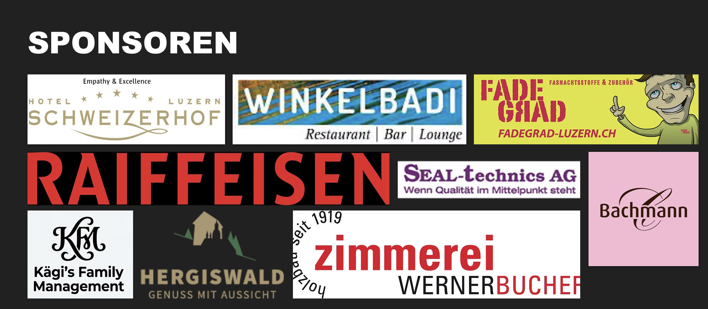

Fasnacht 2026
Bereits ist die Fasnacht 2026 wieder vorbei. Trotz des regnerischen Wetters genossen wir auch diese Fasnacht in vollen Zügen.
mehr sehen
Wir sind eine junge Guggenmusik mit 55 Mitgliedern. Die Dracheschwänz Chriens haben wir 2017 im Kuonimatt Quartier gegründet. Wir beleben aktiv die Fasnacht in Kriens, Horw und Luzern. Mit viel Herzblut und Leidenschaft basteln wir unsere "Grende" und proben für die Fasnacht.
Bereits ist die Fasnacht 2026 wieder vorbei. Trotz des regnerischen Wetters genossen wir auch diese Fasnacht in vollen Zügen.
mehr sehen
Unser Fasnachtsprogramm sowie der Sujetpin 2026 sind erhältlich. Termine und Auftritte stehen in der Agenda.
zur Agenda
Nach dem Grillanlass starteten wir mit Proben, Auftritten und viel Vereinsleben ins neue Jahr.
mehr über unsAus dem Konzept
Der Prototyp mischt die offizielle schwarze Website mit den bestehenden Ideen: klare Seiten, einfache Typografie, grosse Fotos, Mitmachen ohne Hürden und Inhalte für neue Interessierte.
Sponsoren
